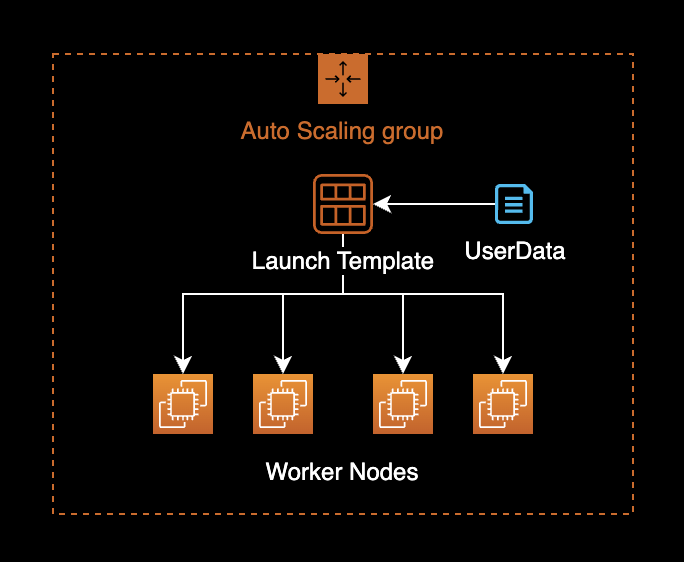

kubelet의 Garbage Collection 설정
개요
Kubelet에서 자동으로 컨테이너 이미지를 정리하도록 Image Garbage Collection을 설정하는 방법을 소개합니다.
이 글에서는 크게 2가지 워커노드 운영 방식에 대해서 Image Garbage Collection 설정방법을 다룹니다.
- EKS 노드그룹이 관리하는 EC2 워커노드 환경에서 Image Garbage Collection 설정하기
- Cluster Autoscaling을 담당하는 Karpenter에서 관리하는 EC2 워커노드 환경에서 Image Garbage Collection 설정하기
배경지식
Image Garbage Collection
Image Garbage Collection 기능을 잘 활용하면, EKS 워커노드의 호스트에서 구동되는 Containerd 데몬이 사용하는 디스크 공간을 효율적으로 사용할 수 있으며 불필요한 이미지와 레이어를 자동으로 삭제하여 디스크 공간을 절약할 수 있습니다.
환경
EKS
- EKS v1.24
- Karpenter v0.27.0
로컬 환경
- OS : macOS Ventura 13.2.1
- Shell : zsh + oh-my-zsh
- AWS CLI : 2.11.2
설정방법
EKS 노드그룹
UserData 확인
EKS EC2 노드그룹은 Auto Scaling Group과 Launch Template 기반으로 운영됩니다.

기존 워커노드에서 사용하는 Launch Template의 UserData 설정 정보를 확인합니다.
$ LT_ID=lt-xxxxxxxxxxxxxxxxx
LT_ID 환경변수에는 현재 EKS 노드그룹에서 사용중인 Launch Template ID를 입력합니다.
해당 Launch Template의 UserData 설정 정보를 확인합니다.
$ aws ec2 describe-launch-template-versions \
--launch-template-id $LT_ID \
--query 'LaunchTemplateVersions[*].LaunchTemplateData.UserData' \
--output text \
| base64 --decode \
&& echo -e '\n'
MIME-Version: 1.0
Content-Type: multipart/mixed; boundary="//"
--//
Content-Type: text/x-shellscript; charset="us-ascii"
#!/bin/bash
set -ex
B64_CLUSTER_CA=LS0tLS1CRUdJTiBDR...CREDENTIAL...==
API_SERVER_URL=https://ExxxxxxFxxxxxxAExxAECBxCxDAxxxxx.sk1.ap-northeast-2.eks.amazonaws.com
K8S_CLUSTER_DNS_IP=172.20.0.10
/etc/eks/bootstrap.sh <YOUR_EKS_CLUSTER_NAME> --kubelet-extra-args '--node-labels=eks.amazonaws.com/nodegroup-image=ami-07xxxxxxx9xxxfxxx,eks.amazonaws.com/capacityType=ON_DEMAND,eks.amazonaws.com/nodegroup=dev-apne2-financial-x86-eks-node-group --max-pods=17' --b64-cluster-ca $B64_CLUSTER_CA --apiserver-endpoint $API_SERVER_URL --dns-cluster-ip $K8S_CLUSTER_DNS_IP --use-max-pods false
--//--
--kubelet-extra-args 옵션을 통해 Kubelet에 대한 상세 파라미터 설정을 관리하고 있습니다.
UserData 수정
AWS 콘솔에 접속한 후 Launch Template의 UserData 값을 수정합니다.
--kubelet-extra-args에 --image-gc-low-threshold=50 --image-gc-high-threshold=70 옵션을 추가합니다.
MIME-Version: 1.0
Content-Type: multipart/mixed; boundary="//"
--//
Content-Type: text/x-shellscript; charset="us-ascii"
#!/bin/bash
set -ex
B64_CLUSTER_CA=LS0tLS1CRUdJTiBDR...CREDENTIAL...==
API_SERVER_URL=https://ExxxxxxFxxxxxxAExxAECBxCxDAxxxxx.sk1.ap-northeast-2.eks.amazonaws.com
K8S_CLUSTER_DNS_IP=172.20.0.10
/etc/eks/bootstrap.sh <YOUR_EKS_CLUSTER_NAME> --kubelet-extra-args '--node-labels=eks.amazonaws.com/nodegroup-image=ami-07xxxxxxx9xxxfxxx,eks.amazonaws.com/capacityType=ON_DEMAND,eks.amazonaws.com/nodegroup=dev-apne2-financial-x86-eks-node-group --max-pods=17 --image-gc-low-threshold=50 --image-gc-high-threshold=70' --b64-cluster-ca $B64_CLUSTER_CA --apiserver-endpoint $API_SERVER_URL --dns-cluster-ip $K8S_CLUSTER_DNS_IP --use-max-pods false
--//--
Kubelet의 Image GC 설정 파라미터
--image-gc-low-threshold=50
디스크 사용률의 50% 이하까지는 Image Garbage Collection를 실행하지 않습니다.
EKS 최적화 AMI 이미지에서의 기본값은 80[%]입니다.
--image-gc-high-threshold=70'
디스크 사용률의 70% 이상부터는 항상 Image Garbage Collection을 실행합니다.
EKS 최적화 AMI 이미지에서의 기본값은 85[%]입니다.
NAME TYPE DESCRIPTION
--image-gc-high-threshold int32 The percent of disk usage after which image garbage collection is always run. (default 85)
--image-gc-low-threshold int32 The percent of disk usage before which image garbage collection is never run. Lowest disk usage to garbage collect to. (default 80)
운영중인 EKS 노드의 Image Garbage Collection 설정을 확인하려면 다음 명령어를 실행해서 확인할 수 있습니다.
$ kubectl proxy
$ curl -sSL "http://localhost:8001/api/v1/nodes/<NODE_NAME>/proxy/configz" \
| python3 -m json.tool
위 명령어에서 <NODE_NAME>은 Node name 이름으로 바꿔서 실행합니다.
{
"kubeletconfig": {
"enableServer": true,
"syncFrequency": "1m0s",
"fileCheckFrequency": "20s",
"httpCheckFrequency": "20s",
"address": "0.0.0.0",
...
"imageGCHighThresholdPercent": 85,
"imageGCLowThresholdPercent": 80,
...
}
}
--image-gc-high-threshold의 기본값은 85[%], --image-gc-low-threshold 값의 기본값은 80[%] 입니다.
기존 Launch Template에 UserData를 수정한 다음 AWS 콘솔에서 새로 저장합니다.
Instance Refresh
변경된 유저 데이터를 기존에 있는 EKS 워커노드에 반영하기 위해 ASG의 인스턴스 교체Instance Refresh를 진행합니다.
롤링 업데이트 방식으로 오토 스케일링 그룹이 EKS 워커노드를 한 대씩 교체하게 됩니다.
$ ASG_NAME=eks-dev-apne2-xxxxxxxxx-x86-eks-node-group-xxxxxxxx-xxxx-xxxx-xxxx-16ab56ee2fec
$ LT_ID=lt-xxxxxxxxxxxxxxxxx
$ aws autoscaling start-instance-refresh \
--auto-scaling-group-name $ASG_NAME \
--strategy Rolling \
--preferences '{"MinHealthyPercentage": 100, "InstanceWarmup": 60}' \
--desired-configuration '{
"LaunchTemplate": {
"LaunchTemplateId": "'${LT_ID}'",
"Version": "$Latest"
}
}'
{
"InstanceRefreshId": "ee2b6718-79cc-47ff-97d3-7001b374a3c1"
}
정상적으로 인스턴스 교체가 시작되면 다음과 같이 결과값으로 InstanceRefreshId를 반환합니다.
결과 확인
워커 노드의 이름을 확인하려면 다음 명령을 실행합니다.
$ kubectl get node -o wide
NAME STATUS ROLES AGE VERSION INTERNAL-IP EXTERNAL-IP OS-IMAGE KERNEL-VERSION CONTAINER-RUNTIME
ip-xx-xxx-xxx-8.ap-northeast-2.compute.internal Ready <none> 6h15m v1.24.10-eks-48e63af xx.xxx.xxx.8 <none> Amazon Linux 2 5.10.165-143.735.amzn2.x86_64 containerd://1.6.6
ip-xx-xxx-xxx-99.ap-northeast-2.compute.internal Ready <none> 23m v1.24.9-eks-49d8fe8 xx.xxx.xxx.99 <none> Amazon Linux 2 5.4.228-131.415.amzn2.x86_64 containerd://1.6.6
ip-xx-xxx-xxx-127.ap-northeast-2.compute.internal Ready <none> 6h20m v1.24.10-eks-48e63af xx.xxx.xxx.127 <none> Amazon Linux 2 5.10.165-143.735.amzn2.x86_64 containerd://1.6.6
ip-xx-xxx-xxx-169.ap-northeast-2.compute.internal Ready <none> 6d5h v1.24.10-eks-48e63af xx.xxx.xxx.169 <none> Amazon Linux 2 5.10.165-143.735.amzn2.x86_64 containerd://1.6.6
ip-xx-xxx-xxx-221.ap-northeast-2.compute.internal Ready <none> 24m v1.24.9-eks-49d8fe8 xx.xxx.xxx.221 <none> Amazon Linux 2 5.4.228-131.415.amzn2.x86_64 containerd://1.6.6
이 중에서 오토 스케일링 그룹의 Instance Refresh에 의해 새로 교체된 노드를 판단합니다.
쿠버네티스 클러스터의 API 서버에 연결하기 위해 다음 proxy 명령을 실행합니다.
$ kubectl proxy
$ curl -sSL "http://localhost:8001/api/v1/nodes/<NODE_NAME>/proxy/configz" \
| python3 -m json.tool
위 명령어에서 <NODE_NAME>은 Node name 이름으로 바꿔서 실행합니다.
{
"kubeletconfig": {
"enableServer": true,
"syncFrequency": "1m0s",
"fileCheckFrequency": "20s",
"httpCheckFrequency": "20s",
"address": "0.0.0.0",
...
"imageGCHighThresholdPercent": 70,
"imageGCLowThresholdPercent": 50,
...
}
}
UserData를 참조하여 --image-gc-high-threshold 값이 70[%], --image-gc-low-threshold 값이 50[%]로 변경된 걸 확인할 수 있습니다.
Karpenter
provisioners CRD에 아래 kubelet 설정을 추가합니다.
spec.kubeletConfiguration.imageGCHighThresholdPercentspec.kubeletConfiguration.imageGCLowThresholdPercent
provisioners YAML을 변경한 예시는 다음과 같습니다.
---
# Reference:
# https://karpenter.sh/v0.27.0/concepts/provisioners/
apiVersion: karpenter.sh/v1alpha5
kind: Provisioner
metadata:
name: default
labels:
app: karpenter
version: v0.27.0
maintainer: younsung.lee
spec:
# Enables consolidation which attempts to reduce cluster cost by both removing un-needed nodes and down-sizing those
# that can't be removed. Mutually exclusive with the ttlSecondsAfterEmpty parameter.
consolidation:
enabled: true
# If omitted, the feature is disabled and nodes will never expire. If set to less time than it requires for a node
# to become ready, the node may expire before any pods successfully start.
ttlSecondsUntilExpired: 1209600 # 14 Days = 60 * 60 * 24 * 14 Seconds;
requirements:
- key: karpenter.sh/capacity-type
operator: In
values: ["on-demand"]
- key: karpenter.k8s.aws/instance-family
operator: In
values: ["t3a"]
- key: karpenter.k8s.aws/instance-size
operator: In
values: ["nano", "micro", "small", "medium", "large", "xlarge"]
- key: kubernetes.io/os
operator: In
values: ["linux"]
- key: kubernetes.io/arch
operator: In
values: ["amd64"]
- key: topology.kubernetes.io/zone
operator: In
values: ["ap-northeast-2a", "ap-northeast-2c"]
providerRef:
name: default
# Karpenter provides the ability to specify a few additional Kubelet args.
# These are all optional and provide support for additional customization and use cases.
+ kubeletConfiguration:
+ imageGCHighThresholdPercent: 70
+ imageGCLowThresholdPercent: 50
Karpenter Controller가 새 노드를 생성할 때 kubelet 설정에 지정한 값들을 주입하게 됩니다.
kubelet 설정을 추가한 provisioner CRD를 생성합니다.
$ kubectl apply -f crds.yaml
이후 Karpenter Controller가 새로 생성하는 워커노드들에는 provisioner에 선언된 kubelet 설정이 오버라이딩 되어 적용됩니다.
Karpenter Controller가 새 워커노드를 생성한 시점 이후에 kubelet 설정 적용 결과를 확인합니다.
$ curl -sSL "http://localhost:8001/api/v1/nodes/<NODE_NAME>/proxy/configz" \
| python3 -m json.tool
{
"kubeletconfig": {
"enableServer": true,
"syncFrequency": "1m0s",
"fileCheckFrequency": "20s",
"httpCheckFrequency": "20s",
"address": "0.0.0.0",
...
"imageGCHighThresholdPercent": 70,
"imageGCLowThresholdPercent": 50,
...
}
}
새로 생성된 워커노드에서 imageGCHighThresholdPercent와 imageGCLowThresholdPercent 값이 지정한 값으로 설정된 걸 확인할 수 있습니다.
참고자료
지정된 디스크 사용량 비율로 이미지 캐시를 정리하도록 Amazon EKS 작업자 노드를 구성하려면 어떻게 해야 합니까
AWS Knowledge Center에 게시된 가이드
How to configuring kubelet garbage collection in EKS Cluster